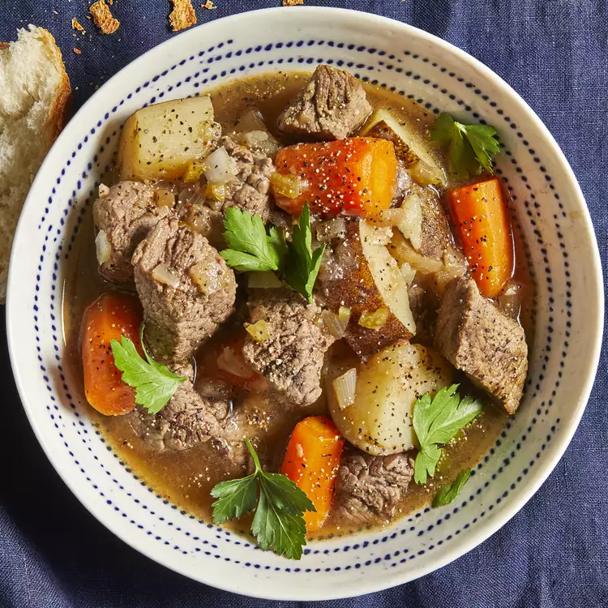

Beef Stew

This easy slow cooker beef stew recipe made with potatoes, carrots, celery, broth, herbs, and spices is hearty and comforting. You won't be slow to say 'yum'!
Ingredients
- Stew Meat
- Flour
- Seasonings
- Broth
- Vegetables
Steps:
- Place meat in slow cooker
- Mix flour, salt, and pepper together in a small bowl. Pour over meat, and stir until meat is coated
- Add beef broth, carrots, potatoes, onion, celery, Worcestershire sauce, paprika, garlic, and bay leave; stir to combine
- Cover, and cook until beef is tender enough to cut with a spoon, on Low for 8 to 12 hours, or on High for 4 to 6 hours